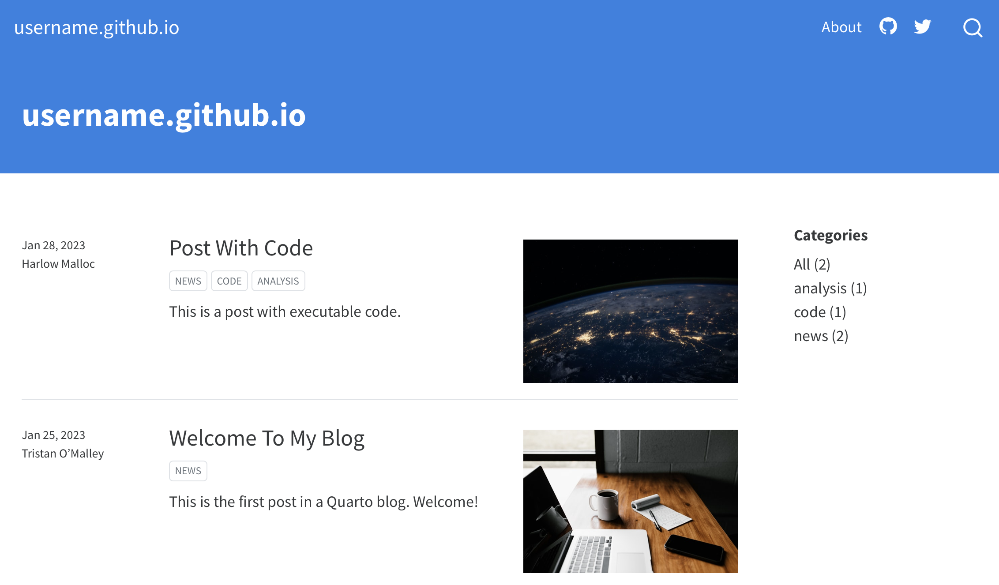

Problem
So I made this personal website and blog after spending a fair amount of time researching how to publish a personal website and blog.
Some options that were suggested to me:
- Medium
- Wordpress
- Github Pages + Jekyll
- Github Pages + fastpages
After realizing that I’d want tight integration between the tools I was using to produce content (i.e. jupyter notebooks) and the mechanism for publishing the content, I decided against Medium or Wordpress.
Github pages + jekyll was more what I wanted, but also turned up a few issues. 1. There was a fair amount to learn about jekyll to understand how to customize formatting. 2. It’s much easier to use an existing template, but the options out there generally are either not well-documented or not maintained, and 3. There’s a still an integration layer I’d need to manage in order to transfer code/outputs from notebooks to web content. I wanted SOME ability to customize, but mostly I wanted to get this thing up and running as fast as possible, and minimize potential work down the road.
Those issues are what fastpages was designed to solve. It’s a well-documented, open-source package that enables automated rendering of content from a notebook into html content that is ready to publish, with some flexibility in how to render the content. It’s not a perfect solution - you’re still tied to their design templates. But there’s always a trade-off between customizability and ease of use, and this seemed like the trade-off that was right for me.
But, fastpages has been deprecated in favor of another open-source package.
Solution
Enter Quarto. This post will cover how to use Github Pages with Quarto in order to manage a personal website and blog with content that is generated entirely through jupyter notebooks. It took me some time to get through all the docs in github and quarto that explain how to do this, so for your convenience I’m condensing the setup process I went through into one place here. As you’ll see, what’s nice is that after the initial setup, all the content can be managed through nothing more than the notebooks themselves (if you’re into that sort of thing).
In fact, this very blog was made using the same steps, and you can view its source code here.
So let’s get to it.
Step 1: Create your github repo
Name it <username>.github.io. e.g.:
The URL for the site will be the same: https://username.github.io
Then, go to the repo’s Pages settings and enable deployment of the main/master branch from the /docs folder
Step 2: Initialize your quarto site locally
First, install quarto
Then, clone your repo locally and create the initial quarto documents
Terminal
git clone https://github.com/<username>/<username>.github.io
quarto create-project <username>.github.io --type website:blog
cd <username>.github.ioReplacing <username> with your actual username of course
Finally, edit the generated _quarto.yml file to use docs as the output-dir.
_quarto.yml
project:
type: website
output-dir: docsStep 3: Add some content and preview
First, begin rendering and previewing the pre-loaded content in your browser. As you add and edit your own content, your preview will update automatically. From the root of your repo:
Terminal
quarto previewYou should see something that looks like this

Edit the title in index.qmd. You should see your site update immediately.
index.qmd
---
title: "<Your Name Here>"Now you are ready to start adding posts. Unsurprisingly, all your posts should go in the posts folder.
So, in the posts folder, create a jupyter notebook, do stuff, and save. You should already see a new entry in your Home page on top of the other two pre-loaded posts. The notebook itself is used to render the post.
Cool, right?
N.B.: If you add a Raw cell to the top of your notebook, you can give it a title and date that will also appear on your site. Important: Make sure the cell is marked as “Raw” and not “Code” or “Markdown”. For example this is the header cell used in the notebook that this post comes from:
posts/blog-post-about-posting-blogs.ipynb
---
title: "How to make a personal blog using jupyter notebooks"
date: "2023-01-29"
---N.B.: To remove the pre-loaded posts, simply delete their folders in posts
Step 4: Edit your “About” page
Open about.qmd and add some content about yourself. You can read more here about how to customize this page to your liking
Step 5: Push to github
First, add a .nojekyll file to the root of your repo that tells GitHub Pages not to do additional processing of your published site using Jekyll
Terminal
touch .nojekyllThen, create a .gitignore file and add the output directory of your project to it:
.gitignore
/.quarto/
/_site/Now you can push everything
Terminal
git add --all
git commit -m "initial site"
git push origin mainYour commit should automatically trigger a deployment through Github Actions. Once this completes, you should be able to see your site live at https://<username>.github.io
And you’re done! You’ve now created a personal blog and can create additional posts by just creating new notebooks under posts.
To learn more about how to customize your site appearance I highly recommend reading through quarto’s blog guide first. See also the full quarto guide.